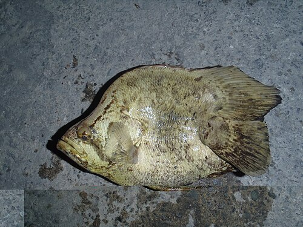
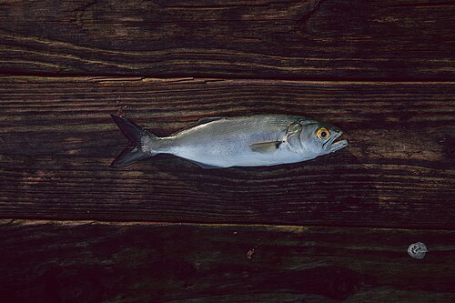
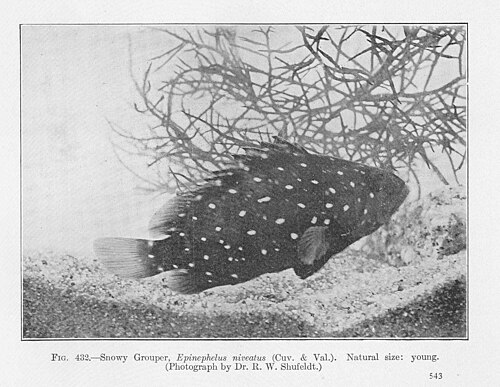
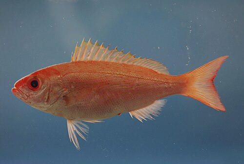
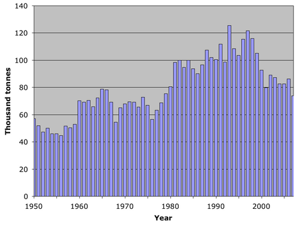

snook

File:Jeff Snook.jpg
out of water (scored 10)
Public domain

File:Centropomus.jpg
score 0

File:Centropomus undecimalis Mexico.jpg
score 0

File:Centropomus undecimalis.jpg
score -1
red-drum

File:Red Drum Fish.jpg
out of water (scored 9)
Public domain

File:SCDNR biologist tags a red drum.jpg
score 7

File:US Navy 110521-N-VE240-211 Rob Warner, a wounded Marine, stands next to his prize-winning catch during Warrior Weekend 2011.jpg
score 4

File:BullRedTCDMo2May2011.jpg
score 4
seatrout

File:Speckled Trout Fishing Louisiana.jpg
out of water (scored 5)
CC BY-SA 2.0

File:FMIB 40409 Spotted Sea Trout or Squeteague (Cynoscion maculatum).jpeg
score 1

File:Spotted Seatrout Weight Length.png
score 0

File:Spotted Seatrout Wt vs. Length.png
score 0
black-drum

File:Pogonias Cromis 2010-05-28.jpg
out of water (scored 4)
CC BY-SA 3.0

File:Gigantic Black Drum.JPG
score 4

File:Black drum.jpg
score 0

File:Black Drum Weight vs. Length Calcasieu Estuary metric.png
score 0
sheepshead

File:A happy fisherman with his fish.jpg
out of water (scored 8)
Public domain

File:Archosargus probatocephalus (sheepshead fish) (Sanibel Island, Florida, USA) 2.jpg
score 6

File:Archosargus probatocephalus (S0966) (12599982853).jpg
score 4

File:Archosargus probatocephalus (sheepshead fish) (Sanibel Island, Florida, USA) 1.jpg
score 3
flounder

File:Paralichthys lethostigma.jpg
best available, may be underwater or not a catch photo (scored 0)
Public domain

File:Southern flounder.jpg
score 0

File:Paralichthys lethostigma (FDA 076).jpg
score -3

File:Paralichthys lethostigma (FDA 230).jpg
score -3
pompano

File:Trachinotus carolinus (S0970) (12591792133).jpg
out of water (scored 4)
CC BY 2.0

File:Pompano WL.png
score 0

File:Trachinotus carolinus.jpg
score 0

File:Trachinotus carolinus 415559729.jpg
score 0
mullet

File:Mugil cephalus Minorca.jpg
best available, may be underwater or not a catch photo (scored 0)
CC BY 3.0

File:Mugil cephalus 251553194.jpg
score 0

File:Mugil cephalus Mexico.jpg
score 0

File:Mugil cephalus (Flathead grey mullet).jpg
score 0
tripletail

File:Lobotes surinamensis Cyprus 01.JPG
best available, may be underwater or not a catch photo (scored 2)
CC BY 3.0

File:Lobotes surinamensis Cyprus 02.JPG
score 2

File:Lobotes surinamensis1.jpg
score 0

File:Lobotes surinamensis Malta.JPG
score 0
bluefish

File:Golden Eye (95828023).jpeg
best available, may be underwater or not a catch photo (scored 2)
CC BY 3.0

File:Pomatomus saltatrix wild capture.png
score 0

File:Pezzo Grosso - panoramio.jpg
score 0

File:Pomatomus saltatrix 3.jpg
score 0
spanish-mackerel

File:FMIB 48306 Catching Spanish Mackerel on the Edge of the Gulf Stream.jpeg
out of water (scored 5)
Public domain

File:Fisheries capture of Scomberomorus maculatus.png
score 2

File:Scomberomorus maculatus (S0962) (12638642815).jpg
score 1

File:Scomberomorus maculatus, Atlantic Spanish Mackerel.jpg
score 0
king-mackerel

File:King-mackerel.jpg
out of water (scored 4)
CC BY 2.0

File:Fisheries capture of Scomberomorus cavalla.png
score 2

File:King Mackerel.JPG
score 0

File:King mackerel ( Scomberomorus cavalla ).jpg
score 0
cobia

File:Rachycentron canadum 502096061.jpg
best available, may be underwater or not a catch photo (scored 0)
CC BY 4.0

File:Rachycentron canadum 501841995.jpg
score 0

File:Rachycentron canadum 501842051.jpg
score 0

File:Rachycentron canadum 501842126.jpg
score 0
barracuda

File:FMIB 49429 Rod Catches of Big Fish.jpeg
out of water (scored 9)
Public domain

File:Seabase bahamas - baracuda fishing - 04.jpg
score 6

File:Sphyraena barracuda 452261333.jpg
score 0

File:Sphyraena barracuda 450735572.jpg
score 0
spot-croaker

File:Spot ( Leiostomus xanthurus ).jpg
best available, may be underwater or not a catch photo (scored 0)
Public domain

File:SpotCroakers3 jetty.jpg
score 0

File:Leiostomus xanthurus (S0598) (12639311624).jpg
score 0

File:Leiostomus xanthurus RR 08-11-19 0549 (48611548241).jpg
score 0
sand-seatrout

File:Cynoscion arenarius.jpg
best available, may be underwater or not a catch photo (scored 0)
Public domain

File:Cynoscion arenarius (FDA 095).jpg
score -3

File:Cynoscion arenarius (FDA 171).jpg
score -3

File:Cynoscion arenarius (FDA 228).jpg
score -3
dolphinfish

File:Ekft 1.jpg
out of water (scored 8)
CC BY-SA 4.0

File:Mahi mahi hatteras nc.jpg
score 7

File:Resultado de la pesca.jpg
score 6

File:Female Dolphin Fish.jpg
score 6
wahoo

File:Recreational-fishing-colombia.jpg
out of water (scored 8)
CC BY-SA 4.0

File:Barbados fishing.jpg
score 2

File:Vahu.jpg
score 0

File:Obs wahoo3.jpg
score 0
gag

File:MycteropercaMicrolepis.jpg
best available, may be underwater or not a catch photo (scored 0)
Public domain

File:Fish4335 - Flickr - NOAA Photo Library.jpg
score 0

File:Fish4336 - Flickr - NOAA Photo Library.jpg
score 0

File:Zwarte Tandbaars (5567460754) (3).jpg
score 0
black-grouper

File:Mycteroperca bonaci.jpg
best available, may be underwater or not a catch photo (scored 0)
CC BY 3.0

File:Gfp-black-grouper.jpg
score 0

File:Black Grouper (Mycteroperca bonaci) (36552107911).jpg
score 0

File:DSC00272 - peixe - Naufrágio e recifes de coral no Nilo.jpg
score 0
red-grouper

File:Red-grouper-epinephelus-morio.jpg
out of water (scored 4)
CC BY-SA 4.0

File:FMIB 49428 Game Fishes of Florida.jpeg
score 1

File:Epinephelus morio1.jpg
score 0

File:Mero - Epinephelus Morio (4372392176).jpg
score 0
scamp

File:Scamp (Mycteroperca phenax) NOAA.jpg
best available, may be underwater or not a catch photo (scored 0)
Public domain

File:Juvenile scamp ( Mycteroperca phenax ) NOAA.jpg
score 0

File:Mycteroperca phenax 586136183.jpg
score 0

File:Mycteroperca phenax 409309810.jpg
score 0
grouper-other

File:FMIB 52004 Snowy Grouper, Epinephelus niveatus (Cuv & Val).jpeg
best available, may be underwater or not a catch photo (scored 1)
Public domain

File:Epinephelus niveatus NOAA.jpg
score 0

File:Snowy grouper (Epinephelus niveatus).jpg
score 0

File:Epinephelus niveatus - pone.0010676.g051.png
score 0
hogfish

File:Hogfish.JPG
best available, may be underwater or not a catch photo (scored 0)
CC BY-SA 3.0

File:Lachnolaimus maximus.jpg
score 0

File:Lachnolaimus maximus adult.jpg
score 0

File:Fish3881 - Flickr - NOAA Photo Library.jpg
score 0
triggerfish

File:778 Balistes capriscus 15.09.2012.jpg
best available, may be underwater or not a catch photo (scored 0)
CC BY-SA 3.0

File:Balistes capriscus 252907206.jpg
score 0

File:Balistes capriscus 252905837.jpg
score 0

File:Grey Trigger fish.jpg
score 0
greater-amberjack

File:Seriola dumerili 2022.jpg
out of water (scored 10)
CC BY-SA 4.0

File:Seriola dumerili catch on a fishing boat deck.jpg
score 5

File:Amberjack Croatia.JPG
score 4

File:Seriola dumerili- Greater amberjack.png
score 1
lesser-amberjack

File:Fish4448 - Flickr - NOAA Photo Library.jpg
best available, may be underwater or not a catch photo (scored 0)
Public domain

File:Seriola fasciata.png
score 0

File:Seriola fasciata.jpg
score 0

File:Seriola Fasciata.png
score 0
black-sea-bass

File:FMIB 49402 Morning's Catch of Black Sea Bass (four Rods), Santa Catalina Island, California Average, 250 lbs.jpeg
out of water (scored 9)
Public domain

File:FMIB 42086 Angling for Black Sea Bass, Santa Catalina Island--The Strike.jpeg
score 7

File:FMIB 42087 Angling for Black Sea Bass, Santa Catalina Island--Gaffing a 240-pound capture.jpeg
score 7

File:101. Black Sea Bass, 1899 (26249773720).jpg
score 4
red-porgy

File:Pargo, pagrus pagrus, pescado a inchiku frente a Cartagena, Murcia..JPG
best available, may be underwater or not a catch photo (scored 2)
CC BY-SA 3.0

File:Pagrus major Red seabream ja01.jpg
score 0

File:090114-besugo1.jpg
score 0

File:Pagrus pagrus 20-10-06.jpg
score 0
tilefish

File:Lopholatilus chamaeleonticeps NOAA.jpg
best available, may be underwater or not a catch photo (scored 0)
Public domain

File:Tilefish 3952.jpg
score 0

File:Lopholatilus chamaeleonticeps2.jpg
score 0

File:Lopholatilus chamaeleonticeps juvenile.jpg
score 0
red-snapper

File:Red Snapper.jpg
out of water (scored 4)
CC BY-SA 3.0

File:Lutjanus campechanus on ice.jpg
score 1

File:Lutjanus campechanus.jpg
score 0

File:Fisheries capture of Lutjanus campechanus.png
score 0
lane-snapper

File:Lutjanus synagris.jpg
best available, may be underwater or not a catch photo (scored 0)
Public domain

File:Pargo fish in Margarita island.jpg
score 0

File:Lane snapper Lutjanus synagris juvenile (3471817077).jpg
score 0

File:Lutjanus synagris range.png
score 0
vermilion

File:Fish4422 - Flickr - NOAA Photo Library.jpg
best available, may be underwater or not a catch photo (scored 0)
Public domain

File:Rhomboplites aurorubens - pone.0010676.g087.png
score 0

File:Rhomboplites aurorubens 422288594.jpg
score 0

File:Rhomboplites aurorubens 422288565.jpg
score 0
gray-snapper

File:Lutjanus griseus (S0624) (12596775395).jpg
out of water (scored 4)
CC BY 2.0

File:Grey snapper - Lutjanus griseus.jpg
score 0

File:Lutjanus griseus (Linnaeus, 1758) - gray snapper, grey snapper (3777249013).jpg
score 0

File:Gray snapper Lutjanus griseus (4686291241).jpg
score 0
mutton-snapper

File:Mutton-snapper-lutjanus-analis.jpg
out of water (scored 6)
CC BY-SA 4.0

File:FMIB 48942 Sorb (Lutianus analis) 18 lbs.jpeg
score 6

File:Lutjanus analis.jpg
score 0

File:Mutton-snapper-eye-closeup.jpg
score 0
cubera-snapper

File:Gfp-cubera-snapper.jpg
best available, may be underwater or not a catch photo (scored 0)
Public Domain

File:Lutjanus cyanopterus SI2.jpg
score 0

File:Lutjanus cyanopterus juvenile.jpg
score 0

File:Lutjanus cyanopterus.jpg
score 0
other-snappers

File:RMS Rhone 2003 3.jpg
best available, may be underwater or not a catch photo (scored 0)
CC BY-SA 3.0

File:Yellowtail snapper Ocyurus chrysurus (3475245386).jpg
score 0

File:Gfp-yellowtail-snapper.jpg
score 0

File:Ocyurus chrysurus.jpg
score 0
stone-crab

File:Stone crabs in cooler.jpg
best available, may be underwater or not a catch photo (scored 1)
Public domain

File:FMIB 46468 Northern Stone-Crab, Lithodes maia Last pair of legs are folded out of sight in the gill chambers.jpeg
score 1

File:FMIB 52687 Menippe mercenavia, the stone-crab; male.jpeg
score 1

File:Live Juvenile Stone crab with Missing Claw - Flickr - Andrea Westmoreland.jpg
score 0
blue-crab

File:World catch blue crab 1950–2007.png
out of water (scored 5)
CC BY-SA 3.0

File:Care Banks - Blue Crab - 06.JPG
score 5

File:Catch! Found a blue crab.jpg
score 2

File:Callinectes sapidus 1.jpg
score 0
lobster

File:Panulirus argus.jpg
best available, may be underwater or not a catch photo (scored 2)
CC BY-SA 3.0

File:FMIB 39034 Sternum of adult male spiny lobster, Panulirus argus.jpeg
score 1

File:TucacasBajoMeroPanulirusArgus.JPG
score 0

File:Four Panulirus argus.jpg
score 0
shrimp

File:Carapax Krebstiere Schema.jpg
best available, may be underwater or not a catch photo (scored 0)
Public domain

File:Litopenaeus setiferus (I1094) (22517303775).jpg
score 0

File:Litopenaeus setiferus (I0142) (13048551453).jpg
score 0

File:Litopenaeus setiferus Manokin 08-28-17 0613 (36799564802).jpg
score -3
permit-pompano

File:Trachinotus falcatus (S0888) (12591679665).jpg
out of water (scored 4)
CC BY 2.0

File:FMIB 41964 Short Pompano (Trachynotus falcatus (Linnaeus)).jpeg
score 1

File:Trachinotus falcatus.jpg
score 0

File:Fish4502 - Flickr - NOAA Photo Library.jpg
score 0
lionfish

File:Red lionfish (Pterois volitans) (44878672394).jpg
best available, may be underwater or not a catch photo (scored 0)
CC BY 2.0

File:Pair of red lionfish.png
score 0

File:Pterois volitans 355310936.jpg
score 0

File:Pterois volitans 355308726.jpg
score 0
unregulated

File:Jack crevalle - Oleta River State Park.jpg
out of water (scored 4)
CC BY-SA 4.0

File:Lisboa Oceanário (10000952083).jpg
score 0

File:Gfp-crevalle-jack.jpg
score 0

File:Lisbon, Oceanarium, Crevalle jack.JPG
score 0
tarpon

File:FMIB 49429 Rod Catches of Big Fish.jpeg
out of water (scored 9)
Public domain

File:The Leap of the Silver King, by Hermann Simon.jpg
score 2

File:Tarpon (PSF).png
score 1

File:Atlantic tarpon.jpg
score 0
bonefish

File:Bonefish Albula vulpes.jpg
best available, may be underwater or not a catch photo (scored 0)
CC BY 2.0

File:The American angler (Page 226, Fig. in text- True bonefi) BHL13118431.jpg
score 0

File:Albula vulpes form.jpg
score 0

File:Albula vulpes head.jpg
score 0
goliath

File:FMIB 49428 Game Fishes of Florida.jpeg
best available, may be underwater or not a catch photo (scored 1)
Public domain

File:Gordon - Goliath grouper.jpg
score 0

File:Itajara.JPG
score 0

File:Epinephelus itajara.jpg
score 0
nassau

File:Nassaubaars.jpg
best available, may be underwater or not a catch photo (scored 0)
CC BY-SA 3.0

File:Grouper shark.jpg
score 0

File:Nassau Grouper.jpg
score 0

File:Nassau grouper in Blijdorp Zoo.jpg
score 0
oysters

File:Zaops ostreum.jpg
best available, may be underwater or not a catch photo (scored 0)
Public domain

File:OysterBed.jpg
score 0

File:Eastern Oyster (Crassostrea virginica) Top (16116198647).jpg
score 0

File:Eastern oyster inside.jpg
score 0